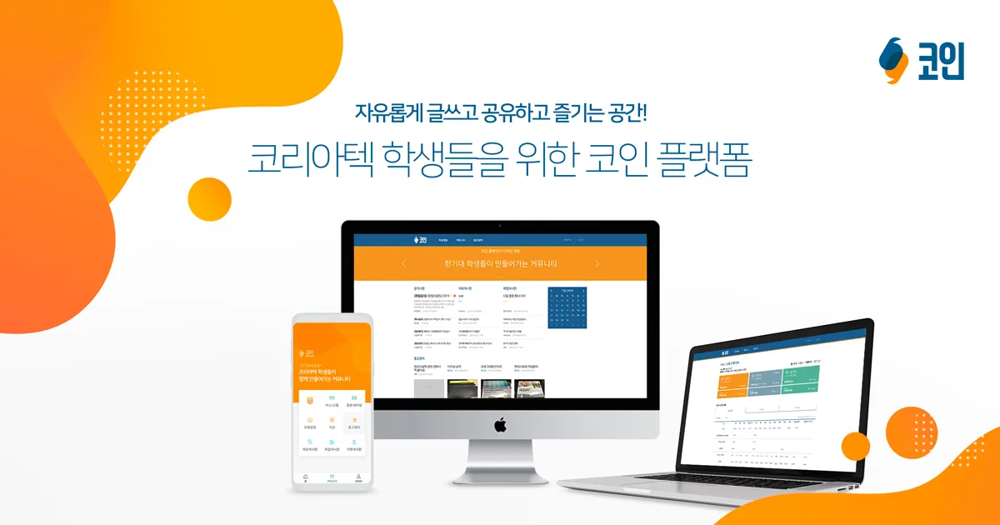

한기대 정보제공 플랫폼, 코인
2024.03 ~ 2024.12

프로젝트 소개
한국기술교육대학교 교내 IT 동아리에서 운영하는 학교 커뮤니티 서비스입니다. 2019년 서비스를 시작하여 교내의 75% 학생 및 교직원 사용자들과 함께 서비스를 운영하고 있습니다. 기존 웹뷰 기반 앱을 네이티브 iOS로 전환하며, 사용자 경험과 성능을 대폭 개선하였습니다.
주요 기능
- 교내 커뮤니티(게시판, 댓글, 공지사항)
- 시간표, 학사일정, 버스 정보 등 실생활 정보 제공
- Firebase 기반 실시간 알림 및 통계
- 다크모드, 반응형 UI, 접근성 강화
기술 스택
- iOS(Swift), Firebase, Node.js, MySQL
- 웹: React, Express.js
성과 및 경험
- MAU 3,300명, 교내 75% 사용률 달성
- 앱 전환 후 사용자 만족도 및 속도 대폭 향상
- Firebase Analytics 기반 데이터 분석 및 A/B 테스트
- 팀 리딩 및 UI/UX 개선 주도